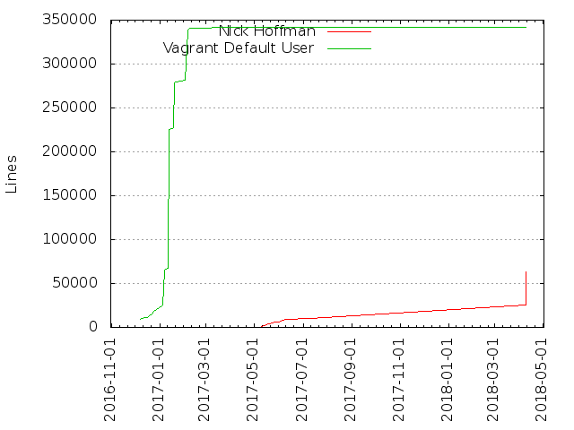
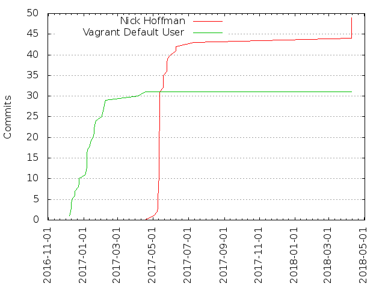

Authors
| Author | Commits (%) | + lines | - lines | First commit | Last commit | Age | Active days | # by commits |
|---|
| Nick Hoffman | 49 (61.25%) | 63689 | 273854 | 2017-05-01 | 2018-04-09 | 342 days, 19:37:28 | 12 | 1 |
| Vagrant Default User | 31 (38.75%) | 342287 | 59480 | 2016-12-07 | 2017-04-17 | 130 days, 14:06:35 | 22 | 2 |


| Month | Author | Commits (%) | Next top 5 | Number of authors |
|---|
| 2018-04 | Nick Hoffman | 6 (100.00% of 6) | | 1 |
| 2017-07 | Nick Hoffman | 1 (100.00% of 1) | | 1 |
| 2017-06 | Nick Hoffman | 2 (100.00% of 2) | | 1 |
| 2017-05 | Nick Hoffman | 40 (100.00% of 40) | | 1 |
| 2017-04 | Vagrant Default User | 2 (100.00% of 2) | | 1 |
| 2017-02 | Vagrant Default User | 5 (100.00% of 5) | | 1 |
| 2017-01 | Vagrant Default User | 14 (100.00% of 14) | | 1 |
| 2016-12 | Vagrant Default User | 10 (100.00% of 10) | | 1 |
| Year | Author | Commits (%) | Next top 5 | Number of authors |
|---|
| 2018 | Nick Hoffman | 6 (100.00% of 6) | | 1 |
| 2017 | Nick Hoffman | 43 (67.19% of 64) | Vagrant Default User | 2 |
| 2016 | Vagrant Default User | 10 (100.00% of 10) | | 1 |
| Domains | Total (%) |
|---|
| gmail.com | 48 (60.00%) |
|---|
| jessie.raw | 32 (40.00%) |
|---|